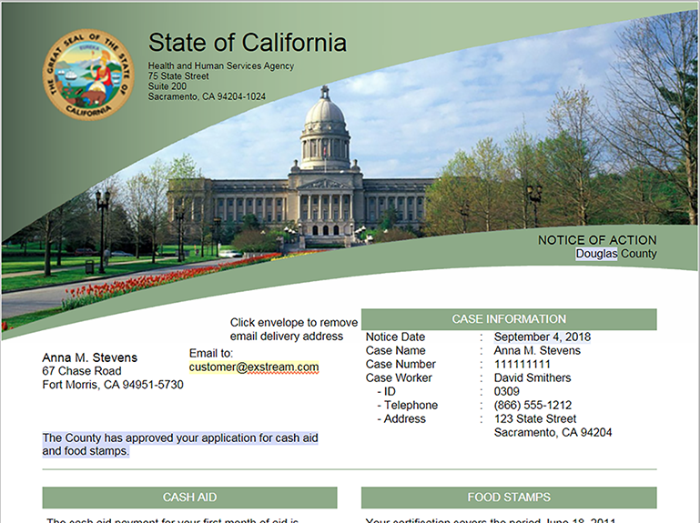
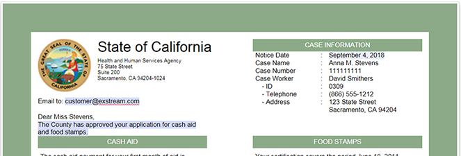

Working with container views in an Empower document
Depending on how your Empower document was designed, you might have the ability to select between a standard view (typically used for page-based output, such as PDF), or one or more container views (used for electronic-based output, such as HTML email).
If container views are available in your Empower document, you can access them from the View tab of the Empower Editor Menu bar. When you click the View tab, you can then access the Available container views drop-down list to switch between any container views that are included in your Empower document.
The following examples show a customer letter in Empower Editor that is set up for both PDF output and HTML email output. Because both views are available, any changes that you make to shared editable areas in one view are also reflected in the other view.


Note that because container views are already designed for HTML output, you do not need a secondary mechanism in order to preview your changes. Therefore, the PREVIEW button is not available in Empower Editor when you are working with a container view.
Similarly, because the individual container designs in Empower documents appear on a single page, the navigation buttons in Empower Editor are not available when you are working in a container view.